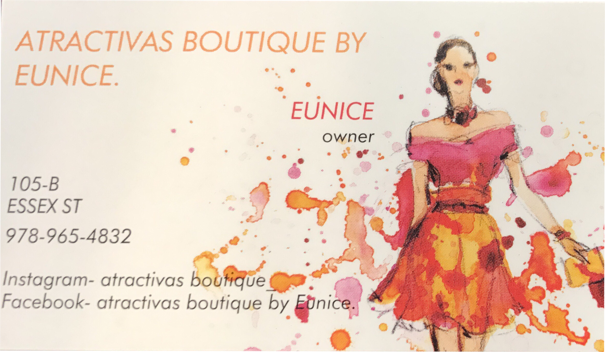
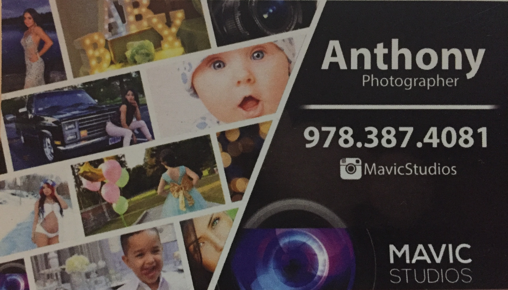

Patrocinadores




Mujer Completa es un taller que nace el 2015 con la necesidad de implementar en la mujeres modernas conocimietos necesarios para el dia de hoy.
Mujer Completa es impartido cada ano en diferentes ciudades, contando con el apoyo de patrocinadores locales que apoyan ese tipo de evento.
Encargada De la Superacion Personal. Aqui nos enfocaremos en el autoestima, como mantener una relacion sana, motivacion entre otros temas de interes.
Ramon Salomon estará encargado de la porción de nutrición y fitness del evento. Aquí recibirás consejos sobre cómo mejorar tu estilo de vida con ejercicio y una dieta saludable.
Encargada de impartir la charla sobre la importancia que tiene el cuidado del cabello natural. Como mantener una cabellera saludable y fuerte.
Encargada del area de las extenciones. Postura de pelo,tipo de pelo y los cuidados par un mejor resultado despues de quitarlas.
Encargado de la Oratoria. Aqui aprendemos el arte de hablar correctamente y como prepararnos para una entrevista de trabajo.
Encargada del area del Maquillaje. Aqui aprendemos maquillaje para diferente rostros, trucos para aprender a utilizar los materiales y maquillaje de dia y noche.
5:00pm Ariel Brito - Horatoria
5:30pm Teresa De Leon - Cuidado del Cabello
6:00PM Rosmery Tapia - Extenciones
7:00pm Ramon Salomon - Fitness
7:30pm Angela Jimenez - Salud de la Mujer
8:00pm Suljy - Maquillaje
8:30pm DESCANSO
9:00pm Orquidea De Leon - Superacion Personal